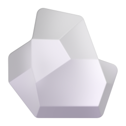

A. 관리 탭 › 달이가 배운 네 가지
유진투자증권이 고객 프로그램마다 적어 온 문장
달이유진투자증권 앱에서
✕오늘뉴스매매일지관리
‹달이가 배운 네 가지
건강한 생활이 건강한 투자를 만든다
달이는 이 문장으로 자랐어요. 아래 네 가지가 달이가 하는 일의 전부예요.
4- 읽기 유진 독서클럽 · 텍스트의 해상도를 높이다 리포트 3줄, 끝까지 같이 읽기 이번 달 12번 쏟아지는 정보 속에서 제대로 읽는 힘. 임직원이 매일 인증하며 읽듯, 달이는 고객과 리포트를 읽어요.
-
 돌아보기 다짐하고 응원받고 · 연말 돌아보기
매매일지, 산 순간 사진
매매 2건 모두 기록
잘했는지 따지지 않고 "그때 무엇을 보고 샀나"만 남겨요. 연말엔 다짐을 같이 돌아봐요.
돌아보기 다짐하고 응원받고 · 연말 돌아보기
매매일지, 산 순간 사진
매매 2건 모두 기록
잘했는지 따지지 않고 "그때 무엇을 보고 샀나"만 남겨요. 연말엔 다짐을 같이 돌아봐요.
-
 꾸준히 유진의 숲 13년째 · 가치걸음
매일 아침 한 줄, 달이네 숲
연속 9일
회사가 2014년부터 걸어서 나무를 심어 왔듯, 달이는 하루 한 줄을 13년처럼 쌓아요.
꾸준히 유진의 숲 13년째 · 가치걸음
매일 아침 한 줄, 달이네 숲
연속 9일
회사가 2014년부터 걸어서 나무를 심어 왔듯, 달이는 하루 한 줄을 13년처럼 쌓아요.
-

함께 기부 시무식 10년 · 착한경매 10회 모두의 조약돌이 차면 나무 한 그루 더 내 조약돌 11 혼자 잘하기보다 같이 모아요. 고객 조약돌이 차면 유진이 숲에 한 그루 더 심어요.
저는 유진이 임직원과 해 온 일을 고객인 홍길동님과도 같이 하려고 태어났어요. 광고는 안 해요. 같이 할 뿐이에요.
유진이 하는 일 더 보기달이네 숲 가기
B. 관리 탭 › 달이네 숲 (나이테)
홍길동님 나무3줄8월 · 9월 · 10월 꾸준히
유진의 숲13줄2014년부터 올해까지
&
달이유진투자증권 앱에서
✕오늘뉴스매매일지관리
‹달이네 숲숲 소식 받는 중
조약돌 11나이테 3줄꾸준함의 기록
한 달을 꾸준히 하면 나이테 한 줄. 유진은 13년을 이렇게 쌓았어요.
10월 나이테까지 꾸준히 12일 / 20일
아침 한 줄 읽기, 매매일지, 미션 중 하나면 하루로 쳐요8일 남음
모두의 조약돌, 한 그루 더 10월 1일 ~ 31일
임직원 걷기로 심는 기본 몫고객 조약돌로 더 심는 몫
고객 조약돌 2,140 / 3,000 → 차면 유진이 노을공원에 10그루 더 심어요
숲 소식
2026년 봄 · 심는 날
600여 명이 1억 1,561만 보를 걸어 노을공원에 400그루를 심었어요. 다음 심는 날 사진도 달이가 가져와요.
숲 위치 지도심던 날 기사 보기
숲은 보여 드리고, 꾸준함은 같이 쌓아요. 홍길동님 나이테 4줄째가 8일 남았어요.